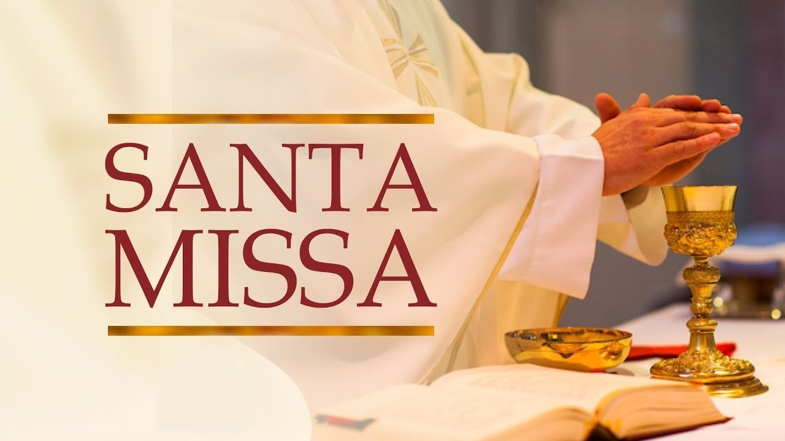
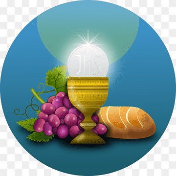
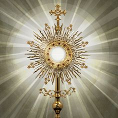
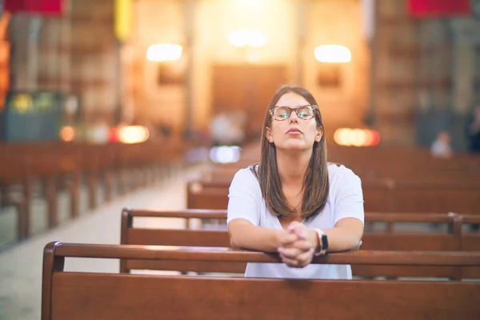
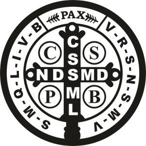
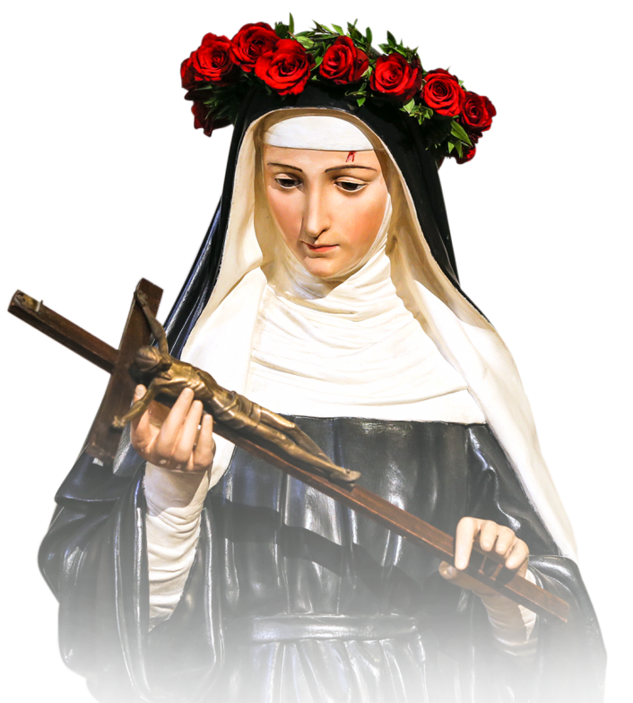
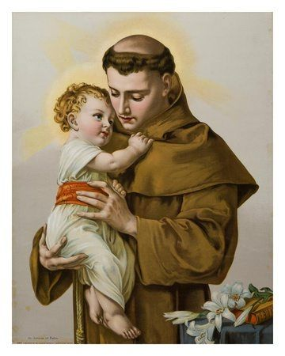

Ir à missa é importante para os católicos por várias razões: Conexão com Deus: A missa é um momento de adoração e comunhão com Deus, onde os fiéis podem se aproximar do sagrado. Receber a Eucaristia: Participar da missa permite receber o Corpo e Sangue de Cristo, um sacramento fundamental na fé católica. Fortalecimento da Comunidade: A missa reúne a comunidade de fé, promovendo laços entre os membros e criando um senso de pertencimento. Reflexão e Crescimento Espiritual: As leituras e homilias oferecem ensinamentos e inspirações para a vida cotidiana, ajudando no crescimento espiritual. Prática da Fé: A missa é uma forma de viver e praticar a fé, reforçando os compromissos e valores católicos. Esses aspectos tornam a participação na missa uma experiência central e significativa na vida dos católicos.
A missa é importante porque permite a adoração a Deus, a recepção da Eucaristia, que nutre espiritualmente os fiéis, e promove a união da comunidade. Além disso, a missa oferece momentos de reflexão e crescimento espiritual, reforçando a prática da fé e o compromisso com os ensinamentos de Cristo.
A comunhão é importante na fé católica porque representa um encontro com Cristo, nutre espiritualmente os fiéis, promove a unidade da comunidade, reforça a fé e oferece perdão dos pecados. É um sacramento central na vida cristã.
O poder da oração é significativo, pois promove uma conexão íntima com Deus, oferecendo força e paz em momentos difíceis. Ela pode transformar o coração e a mente, facilitando o crescimento espiritual. Quando realizada em comunidade, fortalece os laços entre as pessoas e permite a intercessão por outros, pedindo bênçãos e ajuda. Esses aspectos tornam a oração uma prática essencial na vida de fé.
"A cruz sagrada seja minha luz! Não seja o dragão meu guia. Retira-te, Satanás! Nunca me aconselhes coisas vãs. É mal o que tu me ofereces, Bebe tu mesmo o teu veneno!"
Ó Santa Rita de Cássia, cerca-me com o teu manto de amor, e intercede por mim junto ao Senhor. Ajuda-me a encontrar solução para minhas dificuldades, especialmente nesta causa que te apresento (fazer o pedido). Tu que és a santa das causas impossíveis, olha com bondade para meu sofrimento. Dá-me força, fé e esperança. Amém."
Ó glorioso Santo Antônio, amigo dos pobres e defensor das famílias, recorremos a você em busca de sua proteção e bênçãos. Ajudai-nos a fortalecer nosso amor, a compreender um ao outro e a viver em harmonia. Interceda por nós para que nosso casamento seja sempre repleto de amor, paz e felicidade. Que possamos enfrentar juntos os desafios da vida, sempre confiando em Deus. Amém."
